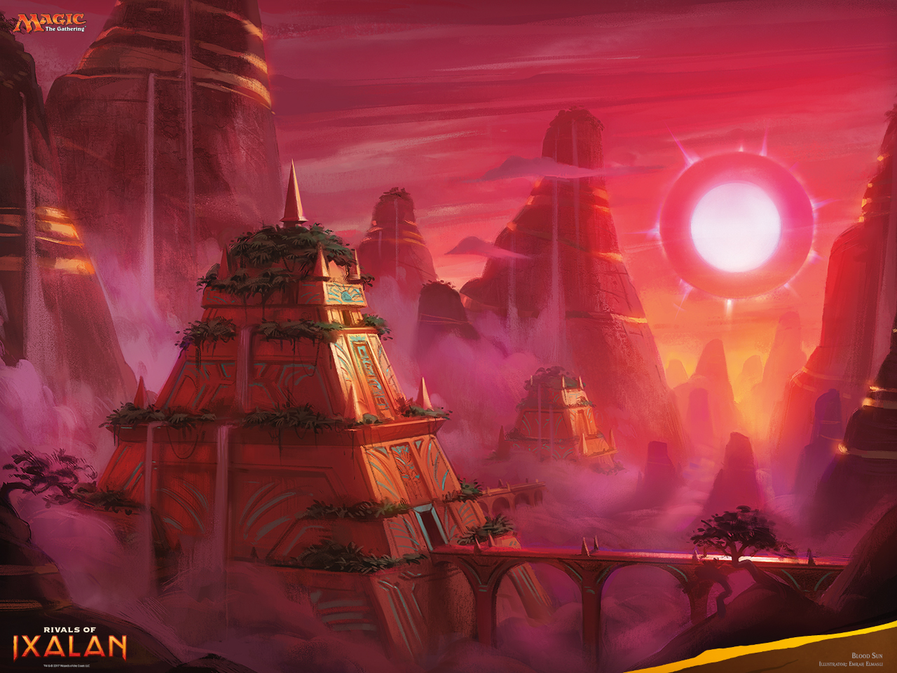
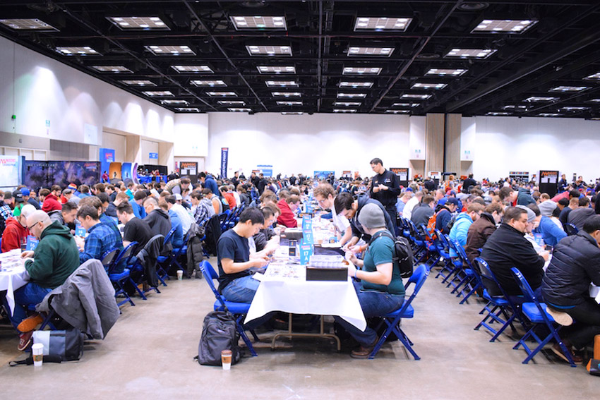

27 stycznia 2017
W ostatnim odcinku omówiłem podstawy gry turniejowej, skupiając się na formacie constructed, a więc z własną, przygotowaną wcześniej talią. Dziś przedstawię garść porad dotyczących formatów limited, czyli takiego typu rozgrywki, gdzie na miejscu otwieramy fabrycznie nowe opakowania z kartami M:tG i to z nich składamy talię do gry.

Jak już pewnie wiecie z poprzednich epizodów kącika medżikowego, dwa najpopularniejsze formaty turniejów limited to sealed deck oraz booster draft. Dla przypomnienia, w obu przypadkach z dostępnych kart składamy talię mającą minimum 40 kart. Zazwyczaj jest to 16-17 lądów dających manę, 15-16 stworów i ok. 8 innych czarów.
W sealdzie otrzymujemy sześć boosterów, najczęściej z 1-2 dodatków. Otwieramy wszystkie i mając do dyspozycji 84 karty, wybieramy 22-24 pasujące do siebie tak, by dało się nimi grać. Do tego dobieramy podstawowe lądy, w dowolnej ilości, żeby całość miała minimum 40 kart. Sealed rozgrywany jest najczęściej w ramach tzw. turniejów pre-release. Na tydzień przed oficjalną premierą kolejnego dodatku, a więc 4 razy w roku (koniec stycznia, koniec kwietnia, połowa lipca oraz przełom września i października) uczestniczące w programie turniejów sklepy organizują eventy, gdzie możemy zagrać kartami, które wkrótce trafią do sprzedaży. Jest to doskonała okazja na zapoznanie się z nowymi mechanikami gry, a także na pozyskanie nowych kart, niedostępnych jeszcze w oficjalnej dystrybucji.

Jeśli chodzi o booster draft, to wydarzenia tego typu rozgrywane są znacznie częściej. W sklepach skupiających wokół siebie liczne community medżikowców nawet kilka razy w tygodniu. W ramach wpisowego otrzymujemy trzy boostery. Na początku każdy gracz otwiera jeden z nich, wybiera jedną kartę i resztę przekazuje w lewo. Czynność powtarzamy, aż skończą się karty. Podobnie postępujemy z drugim boosterem, z tą różnicą, że przekazujemy go graczowi siedzącemu po prawej stronie. Trzeci zestaw przekazujemy ponownie w lewo. Po zakończeniu draftu każdy ma do dyspozycji 42 karty (plus dowolną ilość podstawowych lądów) i podobnie jak w sealdzie, musi zbudować 40-kartową talię. Aby zwiększyć prawdopodobieństwo dociągnięcia dobrej karty, im mniejsza talia, tym lepiej. Dlatego rzadko spotyka się decki mające 42 lub więcej kart.
Oprócz wspomnianych poprzednio akcesoriów do gry w formacie constructed (kartka, długopis, kostki i znaczniki), warto jest zaopatrzyć się w koszulki lub protektory. Podczas gry karty dość szybko ulegają zużyciu: ściera się farba, nietrudno przypadkowo zagiąć róg, itp. Uszkodzone karty, zwłaszcza te lepsze sporo tracą na wartości. Chcąc odsprzedać, bądź też wymienić się po turnieju, zdecydowanie łatwiej będzie to zrobić, gdy karty będą w dobrym stanie wizualnym.
Na zakończenie wspomnę jeszcze o stosunkowo nowym rodzaju rozgrywek, skierowanym przede wszystkim dla początkujących graczy. Tuż po premierze danego dodatku startuje tzw. Liga Magic: the Gathering i trwa kolejne cztery tygodnie. Uczestnicy otrzymują po trzy boostery i z nich składają talię mającą co najmniej 30 kart. W każdym kolejnym tygodniu, oraz po każdych trzech przegranych meczach, można dokupić dodatkowy booster. Otworzone w nim karty dowolnie wykorzystujemy do ulepszenia, bądź też zupełnego przebudowania posiadanej talii. W ramach ligi rozgrywamy dowolną liczbę meczów (jednak maksymalnie cztery z tym samym przeciwnikiem), najczęściej w dowolnym czasie w godzinach otwarcia sklepu. Reguły nagradzania graczy leżą w geście organizatora ligi. Jest to jednak event mający zachęcić początkujących, a więc wyniki są kwestią drugoplanową. W ligach, w których uczestniczyłem ostatnio, główna nagroda przypadała osobie, która rozegrała największą liczbę meczów. Sporo nagród było rozdanych losowo, zaś każdy, kto zagrał przynajmniej 10 razy otrzymywał specjalną kartę promo, niedostępną nigdzie indziej w sprzedaży.